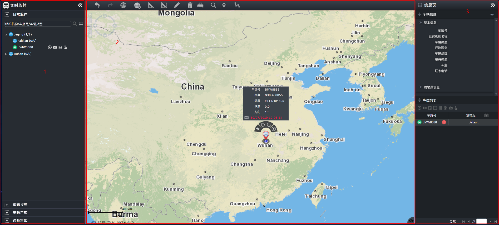

日常监控
日常监控在日常情况下，为用户提供运营车辆的位置监控、视频监控、车辆在线统计、车辆信息查询、车辆追踪、历史轨迹查询、手动报警等功能。用户可根据车辆组织机构对所有运营车辆进行监控，也可对比较关注的车辆分组进行监控。
在左侧导航菜单栏中选择主菜单，进入日常监控主界面。

Fig 20 日常监控主界面
日常监控主界面如上图所示：
| • | 区域1：导航菜单栏，提供日常监控、车辆报警、车辆告警、设备告警这4个菜单项，单击右上方〖 |
| • | 区域2：GIS区，在GIS地图上显示监控车辆相关信息，并提供地图缩放、标绘、测量等功能，GIS区的相关操作请参见 GIS地图操作。 |
| • | 区域3：信息区，上半部显示车辆相关信息，下半部为分组监控区。单击信息区右上方的〖 |